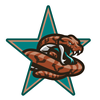

2020 Championship The Orange County Otters have defeated the New York Silverbacks in the 2020 Championship. The Orange County Otters have defeated the New York Silverbacks in the 2020 Championship.
The final score was Otters 31 - 23 Silverbacks.
Garfield Despacito Jr. - WR had a dominant game on offense playing a key part in the victory.
On defense Bob Bob - SS had a stellar outing helping seal the win.
Con Championship Game The New York Silverbacks have defeated the Berlin Fire Salamanders in the 2020 Con Championship Game. The New York Silverbacks have defeated the Berlin Fire Salamanders in the 2020 Con Championship Game.
The final score was Fire Salamanders 20 - 31 Silverbacks.
Ashley Owens - RB had a dominant game on offense playing a key part in the victory.
On defense Bubba Thumper (C) - DT had a stellar outing helping seal the win.
Con Championship GameThe Orange County Otters have defeated the Arizona Outlaws in the 2020 Con Championship Game.
The final score was Outlaws 10 - 16 Otters.
Suleiman Ramza (R) - QB had a dominant game on offense playing a key part in the victory.
On defense Logan Noble Jr. - DE had a stellar outing providing a silver lining to the loss.Con Divisional Round The Berlin Fire Salamanders have defeated the Honolulu Hahalua in the 2020 Con Divisional Round. The Berlin Fire Salamanders have defeated the Honolulu Hahalua in the 2020 Con Divisional Round.
The final score was Hahalua 16 - 20 Fire Salamanders.
Nicholas Ayers - RB had a dominant game on offense even while his team lost.
On defense Adam Schell (R) - LB had a stellar outing helping seal the win.
Con Divisional RoundThe New York Silverbacks have defeated the Austin Copperheads in the 2020 Con Divisional Round.
The final score was Copperheads 15 - 22 Silverbacks.
Sam Howitzer (R) (C) - QB had a dominant game on offense playing a key part in the victory.
On defense Dukburg QuakStak (R) - CB had a stellar outing helping seal the win.Con Divisional Round The Arizona Outlaws have defeated the Philadelphia Liberty in the 2020 Con Divisional Round. The Arizona Outlaws have defeated the Philadelphia Liberty in the 2020 Con Divisional Round.
The final score was Outlaws 31 - 28 Liberty.
Jay Cue (C) - QB had a dominant game on offense playing a key part in the victory.
On defense Logan Noble Jr. - DE had a stellar outing helping seal the win.
Con Divisional RoundThe Orange County Otters have defeated the San Jose SaberCats in the 2020 Con Divisional Round.
The final score was Otters 17 - 12 SaberCats.
Garfield Despacito Jr. - WR had a dominant game on offense playing a key part in the victory.
On defense Lawrence Bass - DE had a stellar outing providing a silver lining to the loss.Con Wildcard RoundThe Berlin Fire Salamanders have defeated the New Orleans Second Line in the 2020 Con Wildcard Round.
The final score was Second Line 3 - 41 Fire Salamanders.
Marcella Toriki - RB had a dominant game on offense even while his team lost.
On defense Adam Schell (R) - LB had a stellar outing helping seal the win.Con Wildcard RoundThe Austin Copperheads have defeated the Sarasota Sailfish in the 2020 Con Wildcard Round.
The final score was Sailfish 20 - 37 Copperheads.
Easton Cole (C) - QB had a dominant game on offense playing a key part in the victory.
On defense Maverick Bowie (R) - FS had a stellar outing helping seal the win.Con Wildcard RoundThe New York Silverbacks have defeated the Chicago Butchers in the 2020 Con Wildcard Round.
The final score was Butchers 26 - 34 Silverbacks.
Sam Howitzer (R) (C) - QB had a dominant game on offense playing a key part in the victory.
On defense Holden Summers - DE had a stellar outing helping seal the win.Con Wildcard Round The Philadelphia Liberty have defeated the Yellowknife Wraiths in the 2020 Con Wildcard Round. The Philadelphia Liberty have defeated the Yellowknife Wraiths in the 2020 Con Wildcard Round.
The final score was Wraiths 21 - 23 Liberty.
Colby Jack - QB had a dominant game on offense even while his team lost.
On defense Douglas Quaid - LB had a stellar outing providing a silver lining to the loss.
Con Wildcard RoundThe Orange County Otters have defeated the Baltimore Hawks in the 2020 Con Wildcard Round.
The final score was Otters 34 - 28 Hawks.
Suleiman Ramza (R) - QB had a dominant game on offense playing a key part in the victory.
On defense Inspectah Deck - LB had a stellar outing helping seal the win.Con Wildcard Round The San Jose SaberCats have defeated the Colorado Yeti in the 2020 Con Wildcard Round. The San Jose SaberCats have defeated the Colorado Yeti in the 2020 Con Wildcard Round.
The final score was SaberCats 23 - 20 Yeti.
Jamar Lackson - RB had a dominant game on offense playing a key part in the victory.
On defense George Fisher - LB had a stellar outing helping seal the win.
Zee Rechs (R) calls out Wraiths Offensive Coordinator Jones after loss. Zee Rechs (R) pointed the finger at his coaches in analyzing the Wraiths loss. 'We have to step up, all of us' he said, and continued: 'But they, the coaches, have to get us ready and have the right gameplan. Well, we were not ready and we had the wrong gameplan'. Zee Rechs (R) - TE was clearly upset in the Wraiths loss. 'We learned a lot. We learned a lot about our coaches. We realized that there is a reason we are losing. I am not sure what Matthew Jones saw in his preparation, but he has to do a better job at Offensive Coordinator', the TE said. Zee Rechs (R) pointed the finger at his coaches in analyzing the Wraiths loss. 'We have to step up, all of us' he said, and continued: 'But they, the coaches, have to get us ready and have the right gameplan. Well, we were not ready and we had the wrong gameplan'. Zee Rechs (R) - TE was clearly upset in the Wraiths loss. 'We learned a lot. We learned a lot about our coaches. We realized that there is a reason we are losing. I am not sure what Matthew Jones saw in his preparation, but he has to do a better job at Offensive Coordinator', the TE said.
Week 18: RB Raphtalia Chan (SAR) wins Offensive Player of the Week Week 18's Offensive Player of the Week is Running Back Raphtalia Chan. His 24 att, 164 yds, 1 TD performance stood out in the 37 to 13 victory for the Sarasota Sailfish. Week 18's Offensive Player of the Week is Running Back Raphtalia Chan. His 24 att, 164 yds, 1 TD performance stood out in the 37 to 13 victory for the Sarasota Sailfish.
The former UCF gridiron star is racking up the rushing yards and now has 1631 Yards and 17 Touchdowns for the season.
Week 18: FS Jamie Nkiah (SAR) wins Defensive Player of the WeekFS Jamie Nkiah of the Sarasota Sailfish has earned the Defensive Player of the Week award. Nkiah finished with 3 Tck, 1 Int, 1 Def TD.Game Recaps for Week 18Wraiths - 30, Liberty - 17
Otters - 33, Hawks - 14
Outlaws - 23, SaberCats - 16
Sailfish - 37, Copperheads - 13
Butchers - 35, Hahalua - 20
Silverbacks - 21, Fire Salamanders - 0Game of the Week: Arizona Outlaws at San Jose SaberCatsOur Expert Predictions:
Jeremy Piper : Arizona Outlaws
The amount leadership on the Outlaws will really help them this week. You only need to look at guys like Zamir Kehla - CB and Pete Miller - DT to see the importance. Leadership like that helps you win games.
Mary Moore : San Jose SaberCats
In this game, I see no way in which you can discount that Jamar Lackson - RB is the guy to watch, this man is pivotal to the SaberCats offense.
Jim Nox : San Jose SaberCats
I really think their offense will make the difference. They are 5th in the league in sacks allowed. They are maulers, 3rd in the league in pancakes. They are 5th in the league average yards per rush. They are 5th in the league rushing touchdowns with 18. They are 5th in the league rushing yards per game. They average 116.3!
Darren Francis : Arizona Outlaws
Look for them to continue their winstreak.
SaberCats' Rando Cardrissian has an opinion on who is the best RBRB Rando Cardrissian had words of praise for himself in a recent interview. 'I am one of the best RBs in the game', he said. Rando Cardrissian brings up Joseph Petrongolo every chance he gets, it seems. 'Is he faster than me? nah. Look at the tape, once the pads come on he slows down. Sure, he is good and he may even be as good as me some day.' The SaberCats RB said. Certainly such words will set the internet forums on fire, and it will be interesting to see if Joseph Petrongolo takes the bait and responds.Week 17: CB David Rector (NOLA) wins Defensive Player of the Week CB Rector's ball hawking ability was on display in the Second Line 59-27 game with the Baltimore Hawks. He finished with 7 Tck, 1 Int, 1 Def TD. CB Rector's ball hawking ability was on display in the Second Line 59-27 game with the Baltimore Hawks. He finished with 7 Tck, 1 Int, 1 Def TD.
"David has the unique ability to make plays and generate turnovers." -Second Line Defensive Coordinator
Week 17: RB Julio Tirtawidjaja (CHI) wins Offensive Player of the Week The honor comes after Tirtawidjaja's 25 att, 138 yds, 1 TD, 3 rec, 102 yds, 1 TD performance against the Berlin Fire Salamanders. Tirtawidjaja from Nebraska was selected in round 0, 4 years ago. The honor comes after Tirtawidjaja's 25 att, 138 yds, 1 TD, 3 rec, 102 yds, 1 TD performance against the Berlin Fire Salamanders. Tirtawidjaja from Nebraska was selected in round 0, 4 years ago.
Tirtawidjaja now has 1339 Rushing Yards and 10 Touchdowns for the season.
Game Recaps for Week 17Outlaws - 17, Yeti - 5
SaberCats - 22, Wraiths - 21
Hahalua - 30, Copperheads - 14
Butchers - 30, Fire Salamanders - 16
Second Line - 59, Hawks - 27
Silverbacks - 27, Liberty - 13
Otters - 30, Sailfish - 27Game of the Week: Austin Copperheads at Honolulu HahaluaOur Expert Predictions:
Jeremy Piper : Austin Copperheads
They will increase their winstreak to two this week.
Mary Moore : Honolulu Hahalua
With people like Luke Skywalker (C) - QB and Buck Thornton - SS who understand the value of team play it is easy to see why the Hahalua win this game.
Jim Nox : Austin Copperheads
Looking at the teams, the received view holds that Dermot Lavelle Jr. - CB will run circles around the offense. This is going to be great to watch. This should be some good football.
Darren Francis : Honolulu Hahalua
I may be biased here, but I think the Hahalua are obviously the better team. A single digit win.
Week 16: WR William Lim (COL) wins Offensive Player of the Week Lim's 6 rec, 170 yds, 2 TD effort led the way for the Colorado Yeti. This weeks 170 receiving yards bring his season total to 1348 yards with 10 touchdowns on the season. Lim's 6 rec, 170 yds, 2 TD effort led the way for the Colorado Yeti. This weeks 170 receiving yards bring his season total to 1348 yards with 10 touchdowns on the season.
"To William, football is about winning and nothing else. He is one of the hardest workers on our team and deserves the attention he is getting from the media and fans." - Yeti Coach
Jeffrey Phillips lashes out in wake of loss.Jeffrey Phillips was angry with his teammates after the loss. He said that the entire team needed to step up. However, he also singled out some teammates. 'Man, I think a bunch of guys let us down. I could point the finger at many.' the 18 year old FB said. Later in the interview he seemed to indicate that Alain Johns - G was one of the players he had in mind.Week 16: DE Asher Montain (HON) wins Defensive Player of the Week DE Montain absolutely dominated in the Hahalua 34-17 game with the New Orleans Second Line. He finished with 7 Tck, 2 Sck, 2 FF, 1 FR. DE Montain absolutely dominated in the Hahalua 34-17 game with the New Orleans Second Line. He finished with 7 Tck, 2 Sck, 2 FF, 1 FR.
Game Recaps for Week 16Wraiths - 24, Hawks - 16
Liberty - 38, Yeti - 31
SaberCats - 27, Otters - 13
Butchers - 33, Silverbacks - 21
Copperheads - 37, Fire Salamanders - 17
Hahalua - 34, Second Line - 17
Outlaws - 28, Sailfish - 23Game of the Week: Sarasota Sailfish at Arizona OutlawsOur Expert Predictions:
Jeremy Piper : Sarasota Sailfish
I do not think people realize how good this defense is. They are 2nd in run defense. Giving up only 74 yards per game. They are 2nd in forced fumbles.
Mary Moore : Arizona Outlaws
For this match up, a good bet is that Zamir Kehla - CB will shine for the Outlaws defense.
Jim Nox : Arizona Outlaws
I find it hard to bet against coach Emery Gallant. He always has them well prepared. He is doing some really smart things on offense. He is running an explosive defense. You heard it here first.
Darren Francis : Sarasota Sailfish
I do not think their offense gets enough credit. They are 5th in the league passing touchdowns with 25. They are 3rd in the league rushing touchdowns with 18. They are 4th in the league rushing yards per game. They average 118.8! They are 2nd in the league points scored per game. They average 29.5!
Second Line racking up yards!The offense of the Second Line is whipping the tail off everybody this year, posting 5383 total yards and 394 points thus far in 14 games. Quarterback Ben Slothlisberger - QB and receiver Ed Barker - WR have hooked up to the tune of 1318 yards this season, while Running Back Marcella Toriki - RB has plowed his way for 1458. The hogs on the line has crushed the opposition for 432 pancakes this season while surrendering only 6 quarterback sacks.Week 15: RB Gunner Thorbjornsson (R) (ARI) wins Offensive Player of the WeekWeek 15's Offensive Player of the Week is Running Back Gunner Thorbjornsson (R). His 22 att, 135 yds, 2 TD performance stood out in the 28 to 24 victory for the Arizona Outlaws.
The former Oregon gridiron star is racking up the rushing yards and now has 1050 Yards and 10 Touchdowns for the season.Greedy Sly calls out Yeti Head Coach Reinhardt after loss.Greedy Sly was angry about the game against Donald Reinhardt. Moreover, he denied that the players were at fault. Greedy Sly - CB was clearly upset in the Yeti loss. 'We learned a lot. We learned a lot about our coaches. We realized that there is a reason we are losing. I am not sure what Donald Reinhardt saw in his preparation, but he has to do a better job at Head Coach', the CB said.Week 15: CB Greedy Sly (COL) wins Defensive Player of the WeekCB Sly's ball hawking ability was on display in the Yeti 34-14 game with the San Jose SaberCats. He finished with 6 Tck, 1 Int, 1 Def TD.
"Greedy has the unique ability to make plays and generate turnovers." -Yeti Defensive CoordinatorGame Recaps for Week 15Outlaws - 28, Hawks - 24
Yeti - 34, SaberCats - 14
Sailfish - 39, Butchers - 24
Silverbacks - 24, Fire Salamanders - 19
Hahalua - 42, Otters - 14
Wraiths - 28, Copperheads - 23
Liberty - 24, Second Line - 21Game of the Week: Arizona Outlaws at Baltimore HawksOur Expert Predictions:
Jeremy Piper : Arizona Outlaws
You got to like this offense. They are 4th in the league in sacks allowed. They are 5th in the league rushing touchdowns with 14. Can't lose.
Mary Moore : Arizona Outlaws
This defense is likely to step up this week. They are 2nd in sacks with 37. They are 4th in pass defense. They only give up 239.6 per game. They are 3rd in the league in tackles for loss. This will be a very entertaining game.
Jim Nox : Baltimore Hawks
Head coach Isidro Combs has this team running like a well oiled machine. He is running an explosive defense. This may be one for the ages.
Darren Francis : Baltimore Hawks
Looking at the two rosters, a good bet is that Donald Baker - DE will wreck havoc for the Hawks defense.
Week 14: SS DB Jadakiss (ARI) wins Defensive Player of the WeekSS DB Jadakiss of the Arizona Outlaws has earned the Defensive Player of the Week award. Jadakiss finished with 10 Tck, 2 Sck.Week 14: RB Marcella Toriki (NOLA) wins Offensive Player of the WeekWeek 14's Offensive Player of the Week is Running Back Marcella Toriki. His 26 att, 204 yds, 4 TD performance stood out in the 43 to 38 victory for the New Orleans Second Line.
The former Oregon gridiron star is racking up the rushing yards and now has 1368 Yards and 14 Touchdowns for the season.Goodman (R) points fingers after Hawks loss. Gary Goodman (R) pointed the finger at his fellow Hawks players after they lost. 'We have to step up, all of us.' he said. 'But some guys are not stepping up and we end up losing. They need to get their head in the game', he continued. 'We lost and somebody is to blame. If you look at the game, you will see some players just are not delivering.' said the Hawks DE. Asked to clarify, Goodman (R) suggested Korbin Brown (R) - WR needs to perform better, but underscored that there was plenty of blame to go around. 'Guys need to listen, we need to get grinding, you cannot just show up and expect to play or expect to win', Goodman (R) concluded. Gary Goodman (R) pointed the finger at his fellow Hawks players after they lost. 'We have to step up, all of us.' he said. 'But some guys are not stepping up and we end up losing. They need to get their head in the game', he continued. 'We lost and somebody is to blame. If you look at the game, you will see some players just are not delivering.' said the Hawks DE. Asked to clarify, Goodman (R) suggested Korbin Brown (R) - WR needs to perform better, but underscored that there was plenty of blame to go around. 'Guys need to listen, we need to get grinding, you cannot just show up and expect to play or expect to win', Goodman (R) concluded.
Game Recaps for Week 14Hawks - 20, Yeti - 13
Outlaws - 30, Liberty - 23
Second Line - 43, Butchers - 38
Sailfish - 31, Hahalua - 21
Copperheads - 23, Silverbacks - 16
SaberCats - 27, Fire Salamanders - 13Game of the Week: Honolulu Hahalua at Sarasota SailfishOur Expert Predictions:
Jeremy Piper : Sarasota Sailfish
We are doing a sweepstakes at the network, and I look forward to raking in the winnings for this bet.
Mary Moore : Sarasota Sailfish
I see them winning again this week.
Jim Nox : Honolulu Hahalua
In the context of this game, it seems obvious that Ray-Ray Jackson - CB will dominate the offense. This is going to be great to watch.
Darren Francis : Sarasota Sailfish
Having team player who help coordinate everyone else is invaluable and definitely helps the Sailfish win this game. If you look at their roster, I see Bob Doe - G and None Beat - SS playing this kind of role. There are so many factors to consider when making predictions. This one was easy though.
Week 13: QB George O'Donnell (CHI) wins Offensive Player of the WeekThe league announced Chicago Butchers quarterback George O'Donnell has been named Offensive Player of the Week.
The Butchers defeated the Yellowknife Wraiths, 37 to 24. O'Donnell did his part, throwing 3 touchdowns, completing 26 of 38 passes for 381 yards. His outstanding performance now brings his season Touchdown to Interception Ratio to 19 to 7, and a passer rating of 103.7.Week 13: DE Dexter Jackson (R) (SAR) wins Defensive Player of the WeekDE Jackson (R) absolutely dominated in the Sailfish 28-23 game with the Austin Copperheads. He finished with 4 Tck, 2 Sck, 1 FF.Game Recaps for Week 13SaberCats - 37, Hawks - 27
Outlaws - 17, Otters - 10
Liberty - 24, Yeti - 17
Sailfish - 28, Copperheads - 23
Hahalua - 31, Fire Salamanders - 17
Second Line - 42, Silverbacks - 9
Butchers - 37, Wraiths - 24Game of the Week: Honolulu Hahalua at Berlin Fire SalamandersOur Expert Predictions:
Jeremy Piper : Honolulu Hahalua
I have a lot of respect for head coach Albert Walling. He is doing great things in Honolulu. He is innovative with his defense.
Mary Moore : Honolulu Hahalua
I see them winning again this week.
Jim Nox : Honolulu Hahalua
Leadership. You cannot discount the difference it makes. I am thinking of a guy like Davriel Lavigne (R) - FS. He will lead the way and help them win. It may even be a blow out.
Darren Francis : Honolulu Hahalua
All aboard the Hahalua hypetrain.
Leonard targets TE Zee Rechs (R) after Wraiths loss.Mervin Leonard was angry with his teammates after the loss. He said that the entire team needed to step up. However, he also singled out some teammates. 'Man, I think a bunch of guys let us down. I could point the finger at many.' the 26 year old CB said. Later in the interview he seemed to indicate that Zee Rechs (R) - TE was one of the players he had in mind.Week 12: DE Medicinal Toblerone (R) (NOLA) wins Defensive Player of the WeekDE Toblerone (R) absolutely dominated in the Copperheads 34-34 game with the New Orleans Second Line. He finished with 4 Tck, 2 Sck, 1 Def TD, 1 FF, 1 FR.Week 12: RB Mai Fukushu (BAL) wins Offensive Player of the WeekThe honor comes after Fukushu's 26 att, 263 yds, 2 TD performance against the Chicago Butchers. Fukushu from Nowhere was selected in round 0, 2 years ago.
Fukushu now has 1022 Rushing Yards and 5 Touchdowns for the season.Game Recaps for Week 12Outlaws - 38, Wraiths - 20
Otters - 44, SaberCats - 23
Copperheads - 34, Second Line - 34
Hahalua - 34, Silverbacks - 17
Hawks - 30, Butchers - 27
Sailfish - 30, Yeti - 27
Fire Salamanders - 21, Liberty - 16Game of the Week: Chicago Butchers at Baltimore HawksOur Expert Predictions:
Jeremy Piper : Baltimore Hawks
This offense is likely to step up this week. They are 1st in the league passing touchdowns with 23. They are 5th in the league passing yards per game. They average 275.1! They are 3rd in the league in sacks allowed. They are maulers, 4th in the league in pancakes. They are 4th in the league points scored per game. They average 27!
Mary Moore : Baltimore Hawks
With leaders like Eldrick Avery - CB and Doug Howlett (R) - WR in the locker room it is easy to see why the Hawks win this game.
Jim Nox : Baltimore Hawks
They will rely on their defense to pull them through. They are 1st in interceptions with 11. They will rack up a lot of points.
Darren Francis : Baltimore Hawks
This week, the Hawks will will need to come together as a team to win. Players like Doug Howlett (R) - WR and Nacho Fries - G who have great team playing skills and understand what everyone needs to to will be pivotal for this.
Melvin Murder-Moose (R) - LB is playing great!Melvin Murder-Moose (R) - LB is looking like the real deal out there so far this season. If he keeps playing such inspired football, he’s got a shot at being remembered as one of the greats.Week 11: CB Osiris Firestorm-Fjord (CHI) wins Defensive Player of the WeekCB Osiris Firestorm-Fjord of the Chicago Butchers has earned the Defensive Player of the Week award. Firestorm-Fjord finished with 13 Tck, 1 Sck, 1 Int.Week 11: RB Julio Tirtawidjaja (CHI) wins Offensive Player of the WeekThe honor comes after Tirtawidjaja's 23 att, 105 yds, 2 TD performance against the Sarasota Sailfish. Tirtawidjaja from Nebraska was selected in round 0, 4 years ago.
Tirtawidjaja now has 703 Rushing Yards and 7 Touchdowns for the season.Wraiths lost. Wraiths casts blame.Zee Rechs (R) pointed the finger at his fellow Wraiths players after they lost. 'We have to step up, all of us.' he said. 'But some guys are not stepping up and we end up losing. They need to get their head in the game', he continued. The Wraiths TE said he felt certain player, such as James Cho - DE, were not playing to their full potential. 'He comes up short in the critical situations. He needs to put in the effort. He needs to show he wants this.', he said. Those words are not likely to go over nicely with team management, who could not be reached for a comment.Game Recaps for Week 11Hawks - 20, Otters - 17
Liberty - 13, Wraiths - 12
Butchers - 35, Sailfish - 28
Fire Salamanders - 19, Second Line - 13
Copperheads - 26, Yeti - 20
Hahalua - 33, Outlaws - 26Game of the Week: New Orleans Second Line at Berlin Fire SalamandersOur Expert Predictions:
Jeremy Piper : Berlin Fire Salamanders
Looking at the teams, a good bet is that there is this DT named Claude Miller II. I expect everyone knows this guy will be a wrecking ball. A close win.
Mary Moore : New Orleans Second Line
Of course the Second Line win. Have you been living under a rock? This will be an action-packed affair.
Jim Nox : Berlin Fire Salamanders
I really like their offense. They are 5th in the league pass completion percentage. They are 1st in the league passing yards per game. They average 288.9! They are 2nd in the league points scored per game. They average 28.4! This should be some good football.
Darren Francis : Berlin Fire Salamanders
They will rely on their defense to pull them through.
Week 10: RB Raphtalia Chan (SAR) wins Offensive Player of the WeekWeek 10's Offensive Player of the Week is Running Back Raphtalia Chan. His 30 att, 103 yds, 2 TD, 3 rec, 22 yds, 1 TD performance stood out in the 34 to 7 victory for the Sarasota Sailfish.
The former UCF gridiron star is racking up the rushing yards and now has 858 Yards and 9 Touchdowns for the season.Fight breaks out at the Sailfish' facility.According to rumours out of the Sailfish locker room Dexter Banks II - QB has been on collision course with many of the other Sailfish players recently. This is fractioning the locker room, and has unfuriated the front office. It all escalated earlier this week when Dexter Banks II - QB threw a punch at James Angler (C) - FB who immediately reciprocated. The Sailfish is said to be monitoring the situation closely.'.Week 10: DT Tyler Montain (AUS) wins Defensive Player of the WeekDT Montain absolutely dominated in the Copperheads 33-21 game with the Berlin Fire Salamanders. He finished with 3 Tck, 1 Sck, 1 Sfty.Game Recaps for Week 10Yeti - 15, Wraiths - 10
Liberty - 30, SaberCats - 7
Second Line - 31, Silverbacks - 25
Copperheads - 33, Fire Salamanders - 21
Sailfish - 34, Outlaws - 7Game of the Week: Arizona Outlaws at Sarasota SailfishOur Expert Predictions:
Jeremy Piper : Arizona Outlaws
Leaders like Zamir Kehla - CB and Pete Miller - DT who are vocal in the locker room and on the field is the kind of thing that pulls the Outlaws through in games like this. A double digit win.
Mary Moore : Arizona Outlaws
One of the most underestimated defenses. They are 4th in sacks with 18. They are 3rd in the league in tackles for loss.
Jim Nox : Sarasota Sailfish
They will get back in the winning column this week. Can't lose.
Darren Francis : Arizona Outlaws
In the context of this game, a good bet is that Zamir Kehla - CB is the guy to watch, this man is pivotal to the Outlaws defense. Can't lose.
Z points fingers after SaberCats loss.Harsh words after the Outlaws - SaberCats game from Draftee Z. The SaberCats FB called out the SaberCats' players, suggesting some of his teammates were phoning it in. 'We lost and somebody is to blame. If you look at the game, you will see some players just are not delivering.' said the SaberCats FB. Asked to clarify, Z suggested Rando Cardrissian - RB needs to perform better, but underscored that there was plenty of blame to go around. 'Guys need to listen, we need to get grinding, you cannot just show up and expect to play or expect to win', Z concluded.Week 9: LB Quenton Bode (C) (NOLA) wins Defensive Player of the WeekLB Quenton Bode (C) of the New Orleans Second Line has earned the Defensive Player of the Week award. Bode (C) finished with 8 Tck, 1 Int, 1 Def TD.Week 9: QB Chika Fujiwara (C) (BAL) wins Offensive Player of the WeekThe league announced Baltimore Hawks quarterback Chika Fujiwara (C) has been named Offensive Player of the Week.
The Hawks defeated the Colorado Yeti, 33 to 28. Fujiwara (C) did his part, throwing 4 touchdowns, completing 23 of 35 passes for 376 yards. His outstanding performance now brings his season Touchdown to Interception Ratio to 21 to 4, and a passer rating of 104.7.Game Recaps for Week 9Hawks - 33, Yeti - 28
Outlaws - 37, SaberCats - 17
Otters - 23, Wraiths - 13
Second Line - 38, Hahalua - 27
Fire Salamanders - 30, Sailfish - 24
Butchers - 28, Silverbacks - 21Game of the Week: Sarasota Sailfish at Berlin Fire SalamandersOur Expert Predictions:
Jeremy Piper : Berlin Fire Salamanders
Do not sleep on this offense. They are 3rd in the league pass completion percentage. They are 1st in the league passing yards per game. They average 290.7! They are 2nd in the league in sacks allowed. They are 3rd in the league average yards per rush. They are 5th in the league rushing touchdowns with 8. They are 4th in the league rushing yards per game. They average 118.8! They are 1st in the league points scored per game. They average 29.3! Can't lose.
Mary Moore : Berlin Fire Salamanders
This week, the Fire Salamanders will will need to come together as a team to win. Players like Asher Quinn - CB and Benoit Blanco - SS who have great team playing skills and understand what everyone needs to to will be pivotal for this. They win big.
Jim Nox : Berlin Fire Salamanders
The Fire Salamanders are a much better team than everyone thinks
Darren Francis : Sarasota Sailfish
I see them winning again this week.
Week 8: CB HeHateMe PickSix (SJS) wins Defensive Player of the WeekCB HeHateMe PickSix of the San Jose SaberCats has earned the Defensive Player of the Week award. PickSix finished with 7 Tck, 1 Int, 1 Def TD.Week 8: QB Wolfie McDummy (C) (COL) wins Offensive Player of the WeekThe Colorado Yeti' Wolfie McDummy (C) threw 4 touchdowns, completing 30 of 40 passes for 416 yards in the Yeti victory over the Orange County Otters.
After being drafted in Round 0 of the 0 amateur draft, season number 10 for McDummy (C), has seen some impressive numbers including 13 touchdown passes this season.Game Recaps for Week 8Yeti - 31, Otters - 21
Liberty - 40, Hawks - 30
Fire Salamanders - 33, Second Line - 27
Sailfish - 27, Silverbacks - 9
Wraiths - 30, Butchers - 21
Outlaws - 20, Copperheads - 17
SaberCats - 40, Hahalua - 24Game of the Week: San Jose SaberCats at Honolulu HahaluaOur Expert Predictions:
Jeremy Piper : Honolulu Hahalua
Do not throw statistics at me! The Hahalua win because they are the better team. Lots of points scored.
Mary Moore : Honolulu Hahalua
Looking at the teams, I think a good bet is that they will not be able to keep Ray-Ray Jackson - CB down for an entire game. Eventually he will come out of the blue and make a big play. Boy, oh boy am I looking forward to this.
Jim Nox : San Jose SaberCats
They will get back in the winning column this week. This will really be a statement win.
Darren Francis : Honolulu Hahalua
Leadership. You cannot discount the difference it makes. I am thinking of a guy like Davriel Lavigne (R) - FS. He will lead the way and help them win. If they do not win, I have to buy cake for the entire office. That is how sure I am.
Top receiver trio?The Otters trio of Garfield Despacito Jr. - WR, Future Trunks - WR and Tatsu Nakamura (C) - FB are currently the leading trio of offensive skill players catching the ball in the league, with 1612 receiving yards between the three.Week 7: RB Raphtalia Chan (SAR) wins Offensive Player of the WeekThe honor comes after Chan's 22 att, 152 yds, 2 TD performance against the New Orleans Second Line. Chan from UCF was selected in round 0, 5 years ago.
Chan now has 597 Rushing Yards and 3 Touchdowns for the season.Steel (C) not pulling punches after the Fire Salamanders won.Hank Steel (C) did not hold his tongue in a post game interview. The Fire Salamanders DT made no efforts to hide his lack of respect for the Otters. 'I think this game proves where our team is, and that the Otters just are not at our level', he said.Week 7: DT Carl Wheezer (OCO) wins Defensive Player of the WeekDT Carl Wheezer of the Orange County Otters has earned the Defensive Player of the Week award. Wheezer finished with 2 Tck, 1 Sck, 1 Def TD, 1 FF, 1 FR.Game Recaps for Week 7Wraiths - 22, Yeti - 17
Outlaws - 38, Hawks - 17
Otters - 38, Liberty - 31
Sailfish - 55, Second Line - 28
Hahalua - 31, Butchers - 21
Silverbacks - 23, Copperheads - 13
Fire Salamanders - 34, SaberCats - 17Game of the Week: Honolulu Hahalua at Chicago ButchersOur Expert Predictions:
Jeremy Piper : Honolulu Hahalua
The Hahalua are a much better team than everyone thinks This will either be wildly entertaining or a dull grind. I see no middle between the two.
Mary Moore : Chicago Butchers
Looking at how the teams match up, it is likely that Julio Tirtawidjaja - RB is a guy who will determine the result of the game. He supersharges their offense. But it will be much closer than many think..
Jim Nox : Chicago Butchers
Their win streak will not be broken in this game.
Darren Francis : Honolulu Hahalua
Looking at the teams, I am certain that Three Foot Jeffrey (R) - DE is going to be a difference maker on the Hahalua defense. Easy prediction.
Sailfish lost. Sailfish casts blame.Harrison Andrews (R) blasted the effort of some teammates after the loss. 'These guys have to show up' he said. 'We all have to take responsibility and make sure we are prepared and some guys are letting the team down'. 'We lost and somebody is to blame. If you look at the game, you will see some players just are not delivering.' said the Sailfish CB. Asked to clarify, Andrews (R) suggested Arlington Heights (R) - DE needs to perform better, but underscored that there was plenty of blame to go around. 'Guys need to listen, we need to get grinding, you cannot just show up and expect to play or expect to win', Andrews (R) concluded.Week 6: FS Raphael d'Alcott (CHI) wins Defensive Player of the WeekFS Raphael d'Alcott of the Chicago Butchers has earned the Defensive Player of the Week award. d'Alcott finished with 1 Tck, 2 Int, 1 Def TD.Week 6: RB Nicholas Ayers (HON) wins Offensive Player of the WeekWeek 6's Offensive Player of the Week is Running Back Nicholas Ayers. His 16 att, 161 yds, 2 TD performance stood out in the 37 to 14 victory for the Honolulu Hahalua.
The former Arizona State gridiron star is racking up the rushing yards and now has 517 Yards and 3 Touchdowns for the season.Game Recaps for Week 6Wraiths - 21, Outlaws - 18
SaberCats - 31, Yeti - 13
Butchers - 30, Copperheads - 24
Fire Salamanders - 30, Sailfish - 12
Hawks - 23, Second Line - 20
Hahalua - 37, Otters - 14
Silverbacks - 37, Liberty - 6Game of the Week: Colorado Yeti at San Jose SaberCatsOur Expert Predictions:
Jeremy Piper : Colorado Yeti
I may be biased here, but I think the Yeti are obviously the better team. A close win.
Mary Moore : San Jose SaberCats
Looking at the teams, a good bet is that Raylan Crowder (R) - DE is a guy to watch on the SaberCats defense. This guy has been unstoppable so far this season.
Jim Nox : San Jose SaberCats
Certainly, this defense will have a good game. They are 4th in points allowed, averaging only 21. They are 5th in pass defense. They only give up 254.3 per game. They are 2nd in interceptions with 5. They are 5th in the league pass average yards per rush. I am looking forward to watching this showdown.
Darren Francis : San Jose SaberCats
They will be eager to show that their loss in that last game was an abnormality.
Mai Fukushu - RB is looking good!Mai Fukushu - RB is looking like a star out there so far this season. If he keeps playing such fantastic football, he’s got a shot at an MVP caliber season.Week 5: FS IHeart Syracuse (BAL) wins Defensive Player of the WeekFS IHeart Syracuse of the Baltimore Hawks has earned the Defensive Player of the Week award. Syracuse finished with 2 Tck, 1 Int, 1 Def TD.Week 5: RB Joseph Petrongolo (BER) wins Offensive Player of the WeekThe honor comes after Petrongolo's 18 att, 219 yds, 2 TD performance against the Orange County Otters. Petrongolo from Vanderbilt was selected in round 0, 3 years ago.
Petrongolo now has 336 Rushing Yards and 2 Touchdowns for the season.Game Recaps for Week 5Liberty - 24, Outlaws - 20
Fire Salamanders - 41, Otters - 27
Hawks - 28, Silverbacks - 23Game of the Week: Baltimore Hawks at New York SilverbacksOur Expert Predictions:
Jeremy Piper : Baltimore Hawks
I see them winning again this week. It may come down to the wire though.
Mary Moore : Baltimore Hawks
Head coach Isidro Combs runs a tight ship in Baltimore. I feel certain he has prepared an excellent gameplan. He is one of the best defensive minds.
Jim Nox : New York Silverbacks
This is just what my gut tells me.
Darren Francis : Baltimore Hawks
You got to like this offense. They are 2nd in the league passing touchdowns with 8. They are 4th in the league passing yards per game. They average 270.7! They are 5th in the league average yards per rush. They are 2nd in the league rushing yards per game. They average 115.3! They are 2nd in the league points scored per game. They average 30.7! Just win baby.
Syracuse delighted after Hawks victory.No mincing of words from IHeart Syracuse after the Hawks beat the Liberty. The Hawks FS made no efforts to hide his lack of respect for the Liberty. 'I think this game proves where our team is, and that the Liberty just are not at our level', he said.Week 4: DE Asher Montain (HON) wins Defensive Player of the WeekDE Asher Montain of the Honolulu Hahalua has earned the Defensive Player of the Week award. Montain finished with 8 Tck, 2 Sck, 1 Sfty.Week 4: RB Mai Fukushu (BAL) wins Offensive Player of the WeekWeek 4's Offensive Player of the Week is Running Back Mai Fukushu. His 27 att, 112 yds, 2 TD performance stood out in the 45 to 28 victory for the Baltimore Hawks.
The former Nowhere gridiron star is racking up the rushing yards and now has 318 Yards and 3 Touchdowns for the season.Game Recaps for Week 4Hawks - 45, Liberty - 28
Otters - 27, Wraiths - 13
Butchers - 30, Second Line - 20
Hahalua - 27, Sailfish - 21
Yeti - 10, Copperheads - 5
Silverbacks - 20, SaberCats - 17Game of the Week: New Orleans Second Line at Chicago ButchersOur Expert Predictions:
Jeremy Piper : New Orleans Second Line
I find it hard to bet against coach Joseph Alfaro. He always has them well prepared. He is has a really good understanding of what works offensively. He is innovative with his defense.
Mary Moore : Chicago Butchers
For this match up, I would argue that they will not be able to contain Tyler Oles JR - CB. He will destroy them. It might be a high scoring game.
Jim Nox : New Orleans Second Line
The Second Line have really strong team play. You look at a player like Medicinal Toblerone (R) - DE and what he does for a team. He makes everyone around him better.
Darren Francis : New Orleans Second Line
For this match up, my perspective is that they have to contain David Rector - CB. I think they will fail. Expect him to show up in a big way and make a difference. Replace the batteries in your remote. You do not want to miss this game.
Liberty lost. Liberty blames coaching.Harsh words after the Liberty - Juan Wilt game from Sam Torenson. The Liberty Juan Wilt pointed the fingers at the coaching staff, suggesting lackluster preparation was to blame for the loss. The Liberty RB said he felt they were outcoached in their latest game. 'We seem to always come up short in the critical situations. I feel like the players are giving their all, but that our coaches just are not holding up their end of the bargain. Especially Offensive Coordinator Juan Wilt has been a dissapointment, he is just not rising to the moment.', he said.Week 3: SS Eugene Smoothie (COL) wins Defensive Player of the WeekSS Eugene Smoothie of the Colorado Yeti has earned the Defensive Player of the Week award. Smoothie finished with 5 Tck, 1 Sck, 1 Int, 1 Def TD.Week 3: RB Jamar Lackson (SJS) wins Offensive Player of the WeekWeek 3's Offensive Player of the Week is Running Back Jamar Lackson. His 26 att, 219 yds, 3 TD performance stood out in the 27 to 10 victory for the San Jose SaberCats.
The former Yale gridiron star is racking up the rushing yards and now has 382 Yards and 6 Touchdowns for the season.Game Recaps for Week 3SaberCats - 27, Wraiths - 10
Outlaws - 28, Otters - 27
Second Line - 31, Copperheads - 10
Hahalua - 22, Silverbacks - 17
Butchers - 34, Yeti - 31Game of the Week: New Orleans Second Line at Austin CopperheadsOur Expert Predictions:
Jeremy Piper : Austin Copperheads
Head coach Herb Mast does a great job getting them prepared every week. This week will be no different. He is running a great offense.
Mary Moore : New Orleans Second Line
The Second Line are a much better team than everyone thinks
Jim Nox : Austin Copperheads
I think their offense is really good. Can't lose.
Darren Francis : Austin Copperheads
For this game, I think that Zoe Watts (R) - RB always has an impact. The defense will have to gameplan for him if they want to stand even the slightest chance. There will be some wild plays in this game.
Week 2: FS Shawn Dawkins (C) (HON) wins Defensive Player of the WeekFS Dawkins (C)'s ball hawking ability was on display in the Hahalua 33-20 game with the Berlin Fire Salamanders. He finished with 2 Tck, 1 Int, 1 Def TD, 1 Sfty.
"Shawn has the unique ability to make plays and generate turnovers." -Hahalua Defensive CoordinatorWeek 2: RB Zoe Watts (R) (AUS) wins Offensive Player of the WeekWeek 2's Offensive Player of the Week is Running Back Zoe Watts (R). His 11 att, 141 yds, 4 TD performance stood out in the 41 to 13 victory for the Austin Copperheads.
The former Stanford gridiron star is racking up the rushing yards and now has 220 Yards and 4 Touchdowns for the season.Game Recaps for Week 2Yeti - 61, Outlaws - 10
Otters - 48, Liberty - 31
SaberCats - 30, Hawks - 27
Copperheads - 41, Butchers - 13
Hahalua - 33, Fire Salamanders - 20
Sailfish - 35, Silverbacks - 29
Second Line - 23, Wraiths - 7Game of the Week: Yellowknife Wraiths at New Orleans Second LineOur Expert Predictions:
Jeremy Piper : Yellowknife Wraiths
You just have to look at their defense.
Mary Moore : Yellowknife Wraiths
I think their offense is really good.
Jim Nox : New Orleans Second Line
They will win again this week. Really this could go either way, but you will never get me to admit it.
Darren Francis : New Orleans Second Line
The leadership on the Second Line is great. You look at guys like Medicinal Toblerone (R) - DE and what he does for a team. Leadership like that helps you win games. This may be where we see their true colors.
Week 1: LB George Fisher (SJS) wins Defensive Player of the WeekLB Fisher absolutely dominated in the SaberCats 34-27 game with the Philadelphia Liberty. He finished with 8 Tck, 1 Int, 1 Def TD.Week 1: QB Colby Jack (YKW) wins Offensive Player of the WeekThe league announced Yellowknife Wraiths quarterback Colby Jack has been named Offensive Player of the Week.
The Wraiths defeated the Baltimore Hawks, 26 to 20. Jack did his part, throwing 3 touchdowns, completing 35 of 52 passes for 393 yards. His outstanding performance now brings his season Touchdown to Interception Ratio to 3 to 3, and a passer rating of 84.9.Mango-Panda optimistic despite Sailfish loss.Haha Mango-Panda pointed no fingers and saw the upside to the Sailfish loss. Haha Mango-Panda - LB was upbeat in his assessment after the New Orleans lost a close game to the Mango-Panda. 'We learned a lot. We showed a lot. There is reason for optimism. We are very close, and we keep building every week. Do not switch channels, we will be with you shortly.', New Orleans said smiling confidently.Game Recaps for Week 1Wraiths - 26, Hawks - 20
Yeti - 34, Otters - 14
SaberCats - 34, Liberty - 27
Butchers - 24, Fire Salamanders - 18
Copperheads - 30, Hahalua - 24
Second Line - 23, Sailfish - 20Season PredictionsThe sports journalists association has published the results of this year's division prediction polls among their twenty top sports journalists.
Conference 1 Division 1: Moreno Valley Keys with 12 votes (Runner up: Warren Swamp Bats with 6 votes)
Conference 2 Division 2: Knoxville Hurricanes with 9 votes (Runner up: Los Angeles Golden Hawks with 7 votes)Trade AlertThe Turkeys trade Jacob Small - K and a Turkeys 2021 7th Round Pick to the Sundevils for Datsum PhastBawls - K.Game of the Week: Warren Swamp Bats at Charleston JazzOur Expert Predictions:
Jeremy Piper : Charleston Jazz
I really like their offense.
Mary Moore : Charleston Jazz
One of the most underestimated defenses. You heard it here first.
Jim Nox : Warren Swamp Bats
Replace the batteries in your remote. You do not want to miss this game.
Darren Francis : Charleston Jazz
For this game, it should be clear that Rickie Vaughne (R) - CB needs to show up, but if he does the Jazz will be shutting people down.
G William Bills (N/A) has retired!G William Bills (47 ovr) has retired after failing to get signed in free agency.CB Simon Dominguez (N/A) has retired!CB Simon Dominguez (50 ovr) has retired after failing to get signed in free agency.CB Bertram Harms (N/A) has retired!CB Bertram Harms (35 ovr) has retired after failing to get signed in free agency.Post Free Agency RetirementsThe following players have retired after going unsigned through free agency:DT Donald Hopper (N/A) has retired!DT Donald Hopper (40 ovr) has retired after failing to get signed in free agency.Free Agency Round 10: Round Up42 players signed this week.
The biggest name signing this week was Phillip Forrest. The T out of Fordham signed a $1,290,000 contract for 5 year(s) with Escondido Chippers.
Conference 2 Division 2 was the most active division with a total of 22 signings.
Anchorage Sundevils was the most active signing a total of 5 player(s).
The biggest spender was Anchorage Sundevils who signed 5 player(s) for a total of $5,300,500.Free Agency Round 9: Round Up36 players signed this week.
The biggest name signing this week was Anthony Kirkpatrick. The G out of UCLA signed a $1,040,000 contract for 5 year(s) with Newark Gladiators.
Conference 2 Division 2 was the most active division with a total of 19 signings.
Charlotte Champions was the most active signing a total of 6 player(s).
The biggest spender was Charlotte Champions who signed 6 player(s) for a total of $6,392,500.Free Agency Round 8: Round Up40 players signed this week.
The biggest name signing this week was Douglas Sutton. The RB out of Oregon signed a $1,192,500 contract for 3 year(s) with Columbia Dolphins.
Conference 2 Division 2 was the most active division with a total of 21 signings.
Escondido Chippers was the most active signing a total of 5 player(s).
The biggest spender was Springfield Tamarins who signed 4 player(s) for a total of $5,900,000.Free Agency Round 7: Round Up41 players signed this week.
The biggest name signing this week was David Rowe. The RB out of Colorado State signed a $1,416,000 contract for 2 year(s) with Columbia Dolphins.
Conference 1 Division 1 was the most active division with a total of 22 signings.
Columbia Dolphins was the most active signing a total of 6 player(s).
The biggest spender was Columbia Dolphins who signed 6 player(s) for a total of $7,688,000.Free Agency Round 6: Round Up31 players signed this week.
The biggest name signing this week was Jerrod Covey. The RB out of Duke signed a $2,300,000 contract for 5 year(s) with Anchorage Sundevils.
Conference 1 Division 1 was the most active division with a total of 17 signings.
Warren Swamp Bats was the most active signing a total of 6 player(s).
The biggest spender was Warren Swamp Bats who signed 6 player(s) for a total of $7,762,500. |
 Hawks
Hawks Liberty
Liberty Otters
Otters Outlaws
Outlaws Wraiths
Wraiths Yeti
Yeti Butchers
Butchers Copperheads
Copperheads Fire Salamanders
Fire Salamanders Hahalua
Hahalua Sailfish
Sailfish Second Line
Second Line Silverbacks
Silverbacks